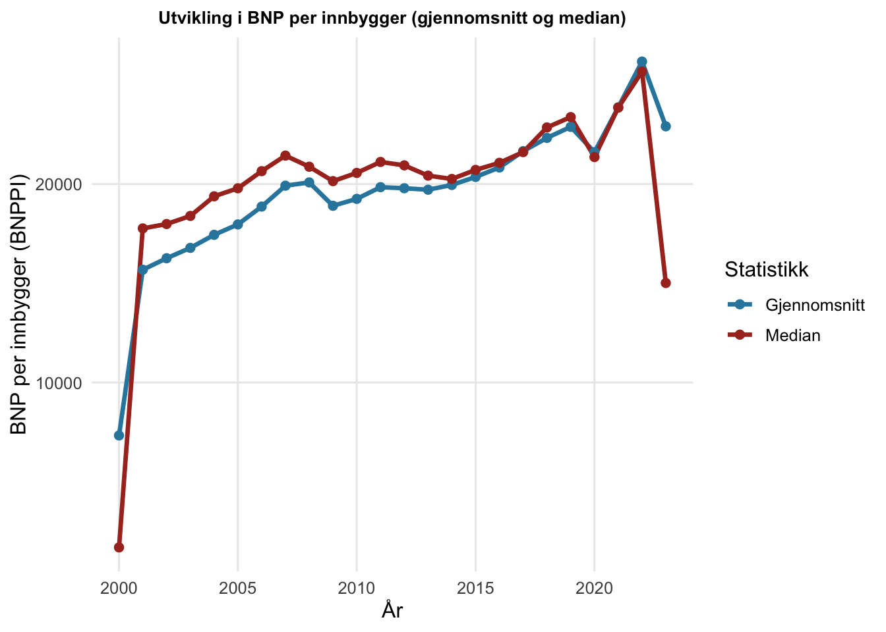
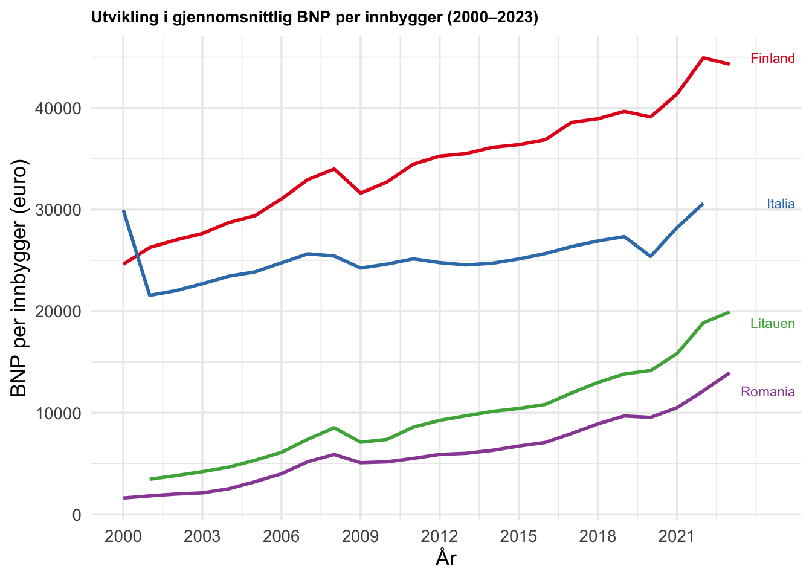
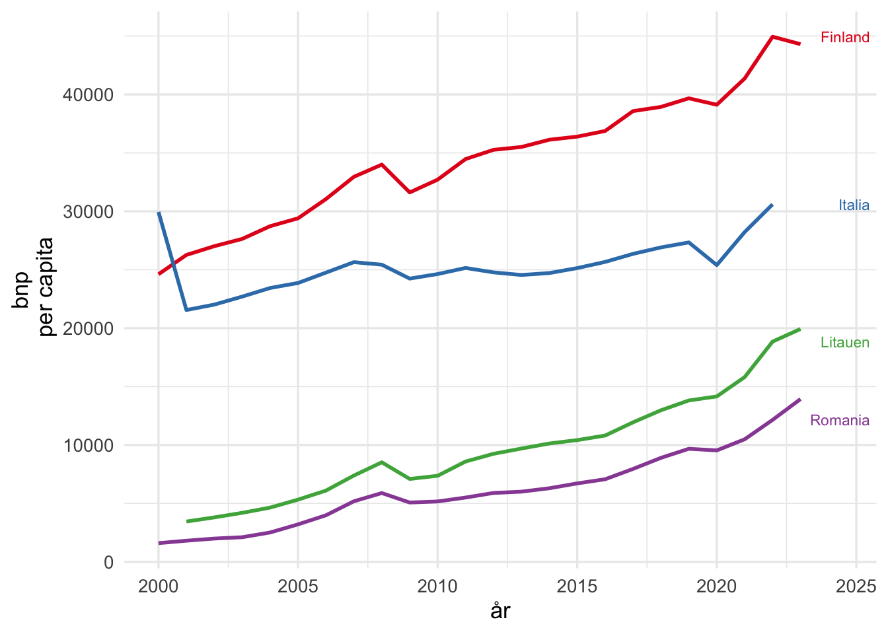
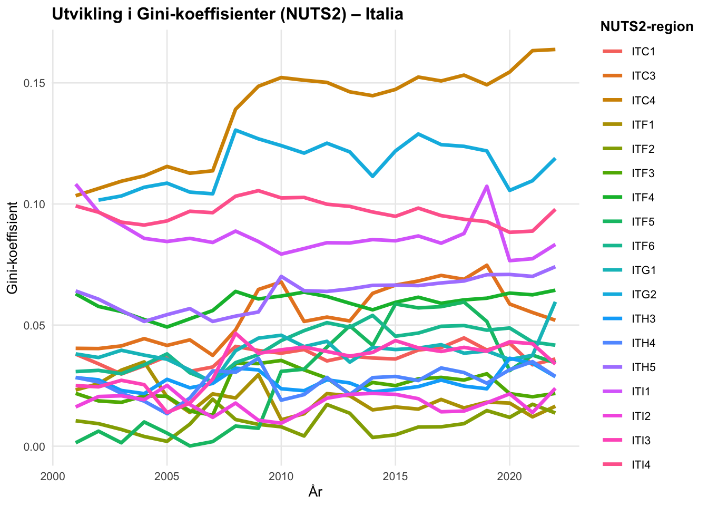
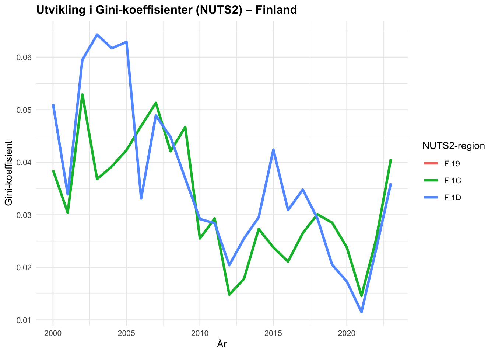
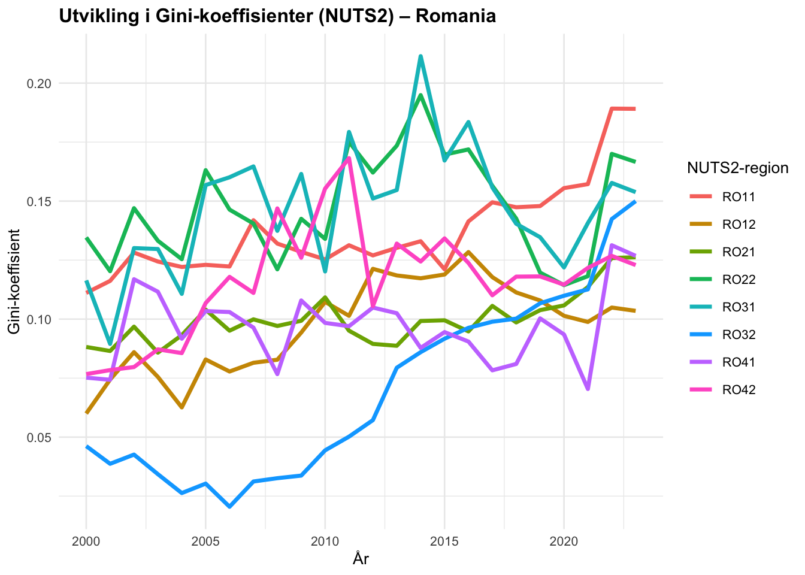
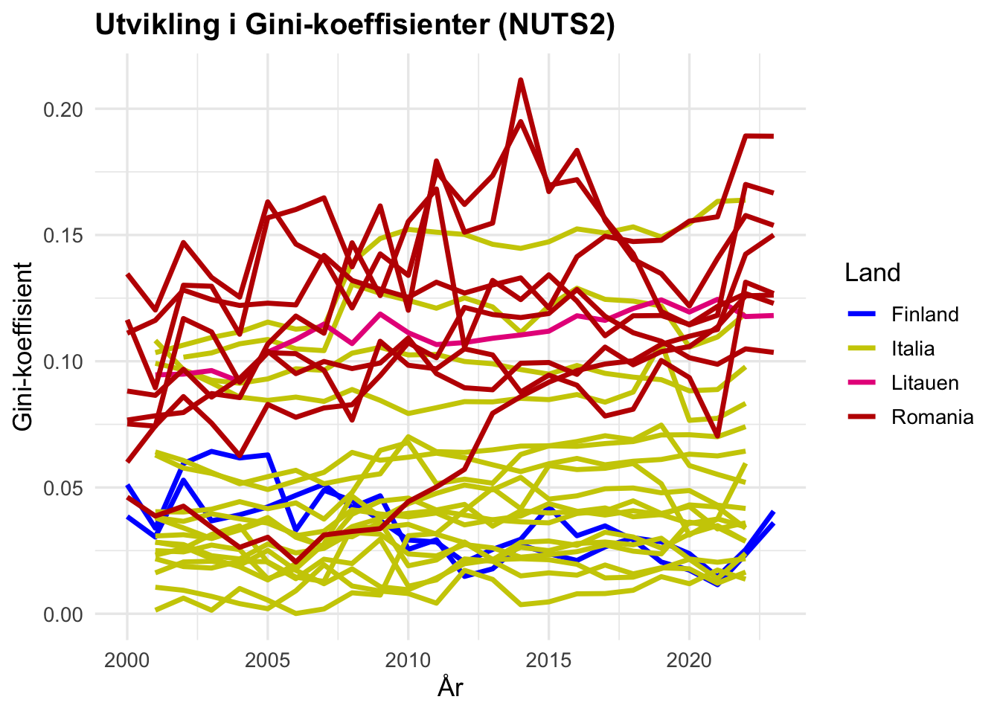
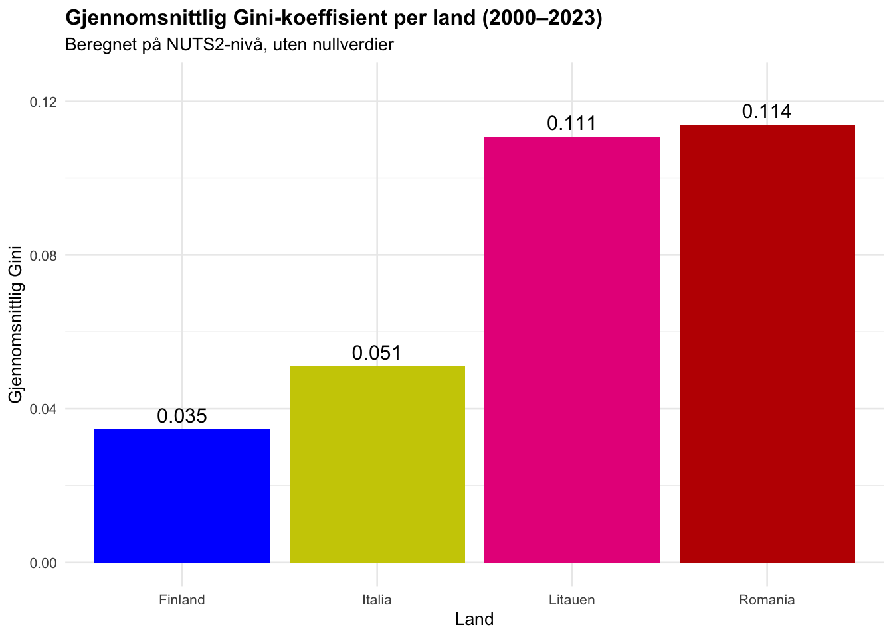
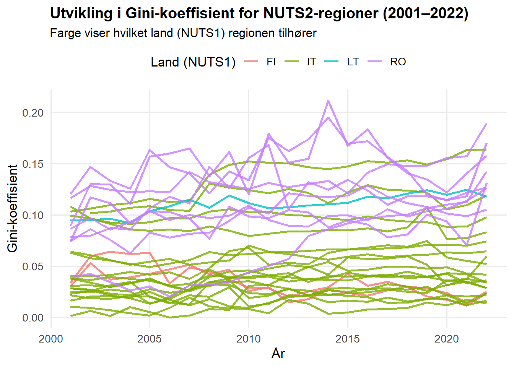

# Henter inn populasjons datasett fra excell
pop_wide <- read_excel("DEMO_Ass1.xlsx", sheet = 2, col_types = "text", na = c(NA, ":")) %>%
clean_names()Assignment 1 — MSB104 — Group 3
Del A: Regional BNP og BNP per innbygger
Innhenting av data
# Omgjør Populasjonen til langt format
pop<- pop_wide %>%
pivot_longer(
cols = starts_with("x"),
names_to = "aar",
values_to = "pop"
) %>%
mutate(
aar = as.integer(str_remove(aar, "^x")),
pop = as.numeric(str_replace_all(pop, " ", ""))
)Kort gjennomgang av datasett og variabler
Datasette demo_r_pjanggr3 som er hentet fra Eurostat inneholder årlige befolkningestimater på NUTS3-nivå for EU-, EFTA- og kandidatland. Variablene values viser totalt antall bosatte personer per 1. januar, målt i antall personer. Hver observasjon identifiseres ved regionkode(geo) og år (time), samt kjønn (sex) og alder (age). I denne analysen benyttes kun total befolkning (sex = T,age = TOTAL), slik at dataene ikke er splittet etter kjønn eller alder.
Det finnes ulike hovedmetoder å beregne brutto-nasjonaltprodukt. Eurostat har valgt å benytte den såkalte «inntekstmetoden». Eurostat velger denne metoden over utgiftsmetoden grunnet mangel på data for gode-overføringer mellom regioner.
Etter inntektsmetoden regnes BNP på følgende måte: Lønn som utbetales til ansatte + bedrifter sin fortjeneste + skatte og avgifter minus subsidier gitt fra staten + avskrivinger knyttet til industri.
BNP per innbygger
| n | geo | region | aar | pop | bnp | bnp_pi |
|---|---|---|---|---|---|---|
| 4680 | 0 | 0 | 0 | 358 | 515 | 841 |
| n | geo | region | aar | pop | bnp | bnp_pi |
|---|---|---|---|---|---|---|
| 4680 | 0 | 0 | 0 | 358 | 515 | 841 |
Variable | NotNA | CountNA | Mean | Sd | Min | Max |
|---|---|---|---|---|---|---|
pop | 4 322 | 358 | 483 465 | 489 158 | 25 706 | 4 263 542 |
bnp | 4 165 | 515 | 11 049 | 18 841 | 274 | 214 200 |
bnp_pi | 3 839 | 841 | 19 883 | 11 386 | 825 | 66 633 |
I tabellene over har vi kombinert de to datasettene hentet fra Eurostat. Vi har da en tabell som viser BNP per innbygger i hvert av NUTS3 områdene fordelt på år. I hver observasjon hvor det forekommer en NA verdi i populasjon og eller total BNP vil vi også få at BNPPI har verdien NA. Datasettet består av totalt 4680 observasjoner, og 841 av dem ender opp ned NA verdi i BNPPI. For å videre kunne jobbe mer effektivt i utarbeidelsen av tabellene, lager vi et nytt datasett hvor alle observasjoner med NA verdi er fjernet.
| År | Gjennomsnitt BNPPI | Median BNPPI | Minste BNPPI | Største BNPPI |
|---|---|---|---|---|
| 2000 | 7 332 | 1 693 | 825 | 36 461 |
| 2001 | 15 681 | 17 764 | 1 025 | 38 652 |
| 2002 | 16 259 | 17 984 | 1 066 | 40 238 |
| 2003 | 16 783 | 18 392 | 1 235 | 41 704 |
| 2004 | 17 440 | 19 381 | 1 338 | 43 010 |
| 2005 | 17 965 | 19 786 | 1 534 | 44 057 |
| 2006 | 18 864 | 20 647 | 1 998 | 44 605 |
| 2007 | 19 915 | 21 431 | 2 460 | 47 618 |
| 2008 | 20 082 | 20 872 | 3 142 | 50 967 |
| 2009 | 18 903 | 20 146 | 2 583 | 49 307 |
| 2010 | 19 251 | 20 559 | 2 606 | 52 021 |
| 2011 | 19 842 | 21 112 | 2 760 | 52 664 |
| 2012 | 19 786 | 20 939 | 3 074 | 51 194 |
| 2013 | 19 713 | 20 422 | 3 381 | 50 043 |
| 2014 | 19 952 | 20 254 | 3 507 | 50 629 |
| 2015 | 20 357 | 20 710 | 3 663 | 51 592 |
| 2016 | 20 832 | 21 068 | 3 833 | 53 373 |
| 2017 | 21 655 | 21 609 | 4 349 | 54 406 |
| 2018 | 22 323 | 22 850 | 4 982 | 55 923 |
| 2019 | 22 879 | 23 372 | 5 274 | 57 074 |
| 2020 | 21 605 | 21 358 | 5 250 | 55 637 |
| 2021 | 23 863 | 23 849 | 5 685 | 61 275 |
| 2022 | 26 170 | 25 664 | 6 070 | 66 633 |
| 2023 | 22 906 | 15 014 | 6 989 | 61 545 |
År | Gjennomsnitt | Median | Minste | Største |
|---|---|---|---|---|
2000 | 7 332.3 | 1 693.1 | 825.3 | 36 460.6 |
2001 | 15 681.5 | 17 764.2 | 1 024.9 | 38 652.3 |
2002 | 16 259.5 | 17 983.8 | 1 066.0 | 40 238.2 |
2003 | 16 782.7 | 18 392.1 | 1 235.0 | 41 704.0 |
2004 | 17 440.1 | 19 380.5 | 1 337.9 | 43 009.7 |
2005 | 17 964.7 | 19 786.1 | 1 534.5 | 44 057.2 |
2006 | 18 863.7 | 20 647.3 | 1 998.2 | 44 605.3 |
2007 | 19 915.2 | 21 431.5 | 2 459.7 | 47 617.7 |
2008 | 20 081.9 | 20 871.8 | 3 141.9 | 50 967.0 |
2009 | 18 902.8 | 20 145.6 | 2 583.0 | 49 307.2 |
2010 | 19 251.5 | 20 559.1 | 2 606.2 | 52 020.6 |
2011 | 19 841.5 | 21 112.4 | 2 760.0 | 52 664.4 |
2012 | 19 786.5 | 20 939.4 | 3 073.6 | 51 193.6 |
2013 | 19 712.7 | 20 422.1 | 3 381.2 | 50 042.7 |
2014 | 19 952.1 | 20 254.1 | 3 507.2 | 50 628.9 |
2015 | 20 357.0 | 20 710.5 | 3 663.5 | 51 591.6 |
2016 | 20 831.8 | 21 067.9 | 3 833.5 | 53 373.1 |
2017 | 21 654.5 | 21 609.0 | 4 348.7 | 54 405.8 |
2018 | 22 322.9 | 22 849.6 | 4 981.9 | 55 923.5 |
2019 | 22 879.4 | 23 371.7 | 5 274.0 | 57 074.2 |
2020 | 21 605.0 | 21 358.1 | 5 250.3 | 55 637.0 |
2021 | 23 862.6 | 23 848.9 | 5 685.4 | 61 274.8 |
2022 | 26 169.7 | 25 664.3 | 6 069.7 | 66 632.9 |
2023 | 22 905.6 | 15 013.8 | 6 989.5 | 61 545.3 |
I Table 1 ser vi utviklingen av gjennomsnitt, median, minste og høyeste verdi for BNP per inbygger for fra år 2000 til år 2023. Verdiene er basert på alle observasjonene fra datasettet hvor observasjoner med NA verdier er fjernet. Videre skal vi lage en deskriptiv analyse utifra statistikken som fremkommer av datasettet. For å enklere visualisere dette lager vi linjediagrammer for sentrale mål.



I tabellene over ser vi utviklingen av gjennomsnitt og median verdien fra år 2000 til 2023. Begge de statistiske målene følger i stor grad samme utvikling. Det er en stor økning fra 2000 til 2001. Etter dette er det i hovedsak en jevn generelt vekst fra år til år, med et par avvik. I både 2008 og 2020 ser vi reduksjon i BNPPI sammenlignet med det forekommende året. I 2023 ser vi igjen en drastisk endring, spesielt i Median hvor BNPPI reduseres fra ca 25 000 dollar til ca 15 000 dollar. Reduksjonen i år 2008 og 2020 er ikke overraskende og kan forklares med henholdsvis finanskrisen og Covid-19.
En annen faktor som kan påvirke utviklingen av BNPPI er utartingen av NA verdier i data settet vårt. Som tidligere vist er det totalt 841 observasjoner som ikke kommer med i denne tabellen. I hvilken år disse fremkommer og hvilken NUTS3 regioner som forsvinner fra disse årene kan forventes å ha en effekt på gjennomsnittet for det året. Dette kommer av at noen land generelt sett har høyere BNP enn andre.
| aar | antall_NA | total_obs |
|---|---|---|
| 2000 | 140 | 195 |
| 2001 | 31 | 195 |
| 2002 | 26 | 195 |
| 2003 | 26 | 195 |
| 2004 | 26 | 195 |
| 2005 | 26 | 195 |
| 2006 | 26 | 195 |
| 2007 | 26 | 195 |
| 2008 | 26 | 195 |
| 2009 | 26 | 195 |
| 2010 | 26 | 195 |
| 2011 | 26 | 195 |
| 2012 | 26 | 195 |
| 2013 | 26 | 195 |
| 2014 | 26 | 195 |
| 2015 | 26 | 195 |
| 2016 | 26 | 195 |
| 2017 | 26 | 195 |
| 2018 | 26 | 195 |
| 2019 | 26 | 195 |
| 2020 | 26 | 195 |
| 2021 | 26 | 195 |
| 2022 | 26 | 195 |
| 2023 | 124 | 195 |
I denne tabellen ser vi at i BNPPI datasettet er det 140 observasjoner fra 2000 og 124 fra 2023 som har NA verdier. Dette skiller seg ut fra årene i mellom hvor det jevnt gjennom er 26 observasjoner med NA verdi. Totalt er det 195 observasjoner hvert år. En teori som kan forklare at median og gjennomsnittsverdiene er veldig lave i forhold er at NUTS3 regioner med NA verdier i disse årstallene i hovedsak stammer fra land med relativt høyest BNPPI.
Del B: Regional ulikhet
Oppsumering av artikkel
I 2017 publiserte Christian Lessmann og Andre Seidel en artikkel hvor de ser på hvor godt egnet «lysdata» er til å estimere regional inntekt. Sentrale spørsmål som tas opp i artikkelen er hvordan regionale økonomiske ulikheter utvikler seg over tid, og hvilke faktorer som fører til endringer i regional ulikhet.
I en 2012 artikkel som Lessmann og Seidel er inspirert av presenteres ideen om at «lysdata» er en indikasjon på hvor økonomisk utviklet et land er. Tankegangen er at aktiviteter som koster penger å gjennomføre på kvelden som regel trenger lys, og jo rikere et land/ region er jo flere har råd til å delta i slike aktiviteter. Ved å analysere satellittbilder på nattestid kan mengden lys være en indikator på velstanden i området.
Nytteverdien fra denne vinklingen kommer av at det er stor variasjon på hvor godt dokumentert regionale ulikheter er fra land til land. Artikkelen påpeker at tidligere studier på området fokuserer på velutviklete nasjoner, da det ikke finnes tilgjengelige gode nok data for mindre utviklete land på regionalt nivå. Dersom det kan vises at dette konseptet holder vann får forskere enn ny måte å analysere mindre velstående land sine regionale ulikhet.
For å undersøke hvor valid teorien er, analyserer artikkelen først velstående land hvor det allerede finnes godt dekkende data over regionale ulikheter. Ved å analysere bilder fra NASA satellitter og rangere regioner fra 1992 og utover, skaper de estimater over hvor mye økonomisk utvikling regioner har hatt i perioden.
I studien brukes Gini-koeffisient. Dette er et mål som måler hvor skjevt ressurser i en befolkning fordeles, for eksempel mellom regioner. Gini-koeffisient har en skala fra 0 til 1. En 0-verdi betyr at alt er likt fordelt, og 1 betyr at alle ressursene ligger hos en eller et veldig få antall personer. I studien beregnes og måles koeffisienten i regioner over tid, som viser om det er divergens eller konvergens. Dersom koeffisient øker over tid vil det si at forskjellene mellom de rike og fattige øker over tid, og det er divergens. Hvis koeffisienten reduseres over tid reduseres forskjellen mellom rik og fattige, dvs konvergens.
Ved å sammenligne estimatene med faktiske BNP data kommer det frem at teorien i stor grad stemmer overens i middels rike og rike land, mens i fattigere land man har data på er konseptet dårlig egnet.
Beregne Gini-koeffisient på vårt datasett
Videre i oppgaven skal vi beregne Gini-koeffisienten på NUTS2 nivå for landene Italia, Finland, Romania og Litauen. Første steg er å transformere KombinertRen datasettet våres for NUTS3 regioner til en oversikt over NUTS2 regioner. Hver NUTS3 region har en tilhørende “geo” kode. Disse består av 5 tegn, for eksempel ITC31 for Imperia. De fire første symbolene er det samme som NUTS 2 geo-koden. Ved å samle alle observasjoner hvor de første første symbolene er like kan vi lage en datasett fordelt på NUTS 2 regioner.
| land | antall_nuts2 |
|---|---|
| FI | 5 |
| IT | 21 |
| LT | 2 |
| RO | 8 |
I datasettet er det tilsammen 36 NUTS2 regioner, men hvilken land disse faller innenfor er ganske skjevfordelt. Det er 21 NUTS2 regioner fra Italia, mens Litauen har 2. Finland og Romania har henholdsvis 5 og 8 NUTS2 regioner.

Regionene ITC 4 og ITG2 skiller seg ut her da de gjennom hele rekken har en koeffisient mellom 0,10 og 0,17. Dette tyder på at i disse regionene er det en større skjevfordeling av BNPPI enn i resten av landet. I en gjennomsnittsberegning av den gjennomsnittlige Koeffisienten per år ligger den på rundt 0,05.

Tabellen over viser Gini-koeffisienten for regionene i Finland. Vi ser at to av regionene ikke vises eller er på null, dette skyldes at det ikke er noe data fra disse regionene. I grafen ser vi at ulikheten mellom regionene synker gradvis fra rundt 2005 til 2020, noe som tyder på økende økonomisk konvergens mellom regionene. Mot slutten ser vi en svak økning i ulikhet, og en ny region dukker opp med verdier kun fra 2023, noe som forklarer den brå linjen helt til høyre i figuren

Romaina viser et større sprik i fordelingen av Gini koeffisienten enn Italia. Gjennomsnittet ligger på 0,11, mens majoriteten av NUTS2 regionene faller innenfor intervallet 0,6 til 0,17. Blant de fire landene vi analyserer har Romania den største variasjonen i hvor jevn BNPPI er fordelt mellom NUTS3 basert på tilhørende NUTS2 region.

Litauen består av to NUTS 2 regioner. LT01 består av bare en NUTS3 region, og det er ikke mulig å beregne en GINI koeffisient i regionen. LT01 viser gjennom tidsrekken en økende trend. Dette tyder på at de to siste tiårene har det oppstått en større skjevfordeling av ressurser mellom NUTS3 regionene tilhørerne LT01. Regionen har ca. en dobbelt så stor koeffisient som Italia sitt gjennomsnitt, men skjevfordelingen er lavere enn Italias region med høyest koeffisient.

Grafen viser utviklingen i Gini-koeffisienten på NUTS2-nivå for Italia, Finland, Romania og Litauen. Romania (rød) har gjennom hele perioden de høyeste verdiene, med tydelige svingninger som indikerer store økonomiske forskjeller mellom regionene. Italia (gul) har også relativt høye og varierende verdier, men generelt lavere enn Romania. Litauen (rosa) ligger stabilt midt i feltet med moderat ulikhet, mens Finland (blå) har de laveste og mest stabile Gini-verdiene over tid. Samlet sett viser grafen at regionale ulikheter er størst i Romania og minst i Finland, mens Italia og Litauen ligger mellom disse ytterpunktene.
| land | gjennomsnitt_gini | sd_gini | min_gini | max_gini |
|---|---|---|---|---|
| Romania | 0.1139 | 0.0350 | 0.0205 | 0.2114 |
| Litauen | 0.1107 | 0.0095 | 0.0920 | 0.1245 |
| Italia | 0.0510 | 0.0364 | 0.0001 | 0.1638 |
| Finland | 0.0346 | 0.0132 | 0.0115 | 0.0643 |


I tabellen over ser vi GINI koeffisienten for alle NUTS2 regionene som tilhører vårt datasett. GINI verdien beskriver hvor jevn fordelt BNPPI er fordelt mellom NUTS3 regionene som havner i samme NUTS2 region. Koeffisienten ligger i mellom 0,02 og 0,11 for majoriteten av regionene gjennom hele årrekken. Dette indikerer at i hver enkelt NUTS2 region er det en jevn fordeling av BNPPI i de tilhørende NUTS3 regionene.

Her er det laget et linjediagram som viser utviklingen av GINI koeffisient på NUTS1-nivå (Land) basert på fordelingen av BNPPI i NUTS2 regionene. Koeffisientene sier noe om fordelingen av BNPPI mellom NUTS2 regioner sett opp mot hele landet. Vi ser at Italia sin koeffisienten ligger mellom 0,17 og 0,19. Dette indikerer at det i Italia er en større skjevfordeling mellom NUTS2 regionene, enn det er i NUTS3 regionene satt opp mot regioner i samme NUTS2.
Diskusjon
De beregnede Gini-koeffisientene for BNP per innbygger på NUTS2-nivå viser tydelige forskjeller i graden av regional ulikhet mellom landene i utvalget. Romania og Litauen har de høyeste gjennomsnittlige Gini-verdiene på henholdsvis 0,1139 og 0,1107, mens Italia (0,0510) og Finland (0,0346) viser langt lavere nivåer av regional ulikhet. Dette innebærer at de østeuropeiske landene, som i større grad har vært gjennom en overgangsøkonomi og rask omstilling etter EU-innlemmelsen, fortsatt opplever mer betydelige forskjeller i økonomisk utvikling mellom regionene sammenlignet med de mer etablerte økonomiene i Vest- og Nord-Europa.
Samlet sett viser tidsserien for Gini-koeffisientene på NUTS2-nivå at de fleste landene opplever svak økning i ulikhet etter 2010, noe som sammenfaller med finanskrisen og senere perioder med økonomisk omstilling. Øst-Europa (spesielt Romania og Litauen) viser tegn til økonomisk konvergens på nasjonalt nivå, men ikke nødvendigvis på regionalt nivå – de rikeste regionene vokser fortsatt raskere enn resten.
Når det gjelder regionale ulikheter, indikerer resultatene at økonomisk vekst i EU ikke har vært likt fordelt. Land som Finland har klart å opprettholde en jevn fordeling, mens andre land, særlig Romania, som vi ser har en store variasjoner i hvor jevnt fordelt BNPPI-er fra region til region.
Del C: Dokumentasjon av AI
Vi har benyttet chatGTP modell 4.1 og 5 gjennom denne oppgaven. Først har vi benyttet AI til å tolke og forstå oppgaveteksten samt gitt oss et utgangspunkt til hvor vi skal starte med behandlingen av eurostat dataene. Videre har vi benyttet AI til å finne/løse feil i kodene. Ledeteksten vi har benyttet er å gi oppgaveteksten og pensum til chatGPT. Dette ga oss flere ideer om ulike modeller som vi har benyttet i denne oppgaven.